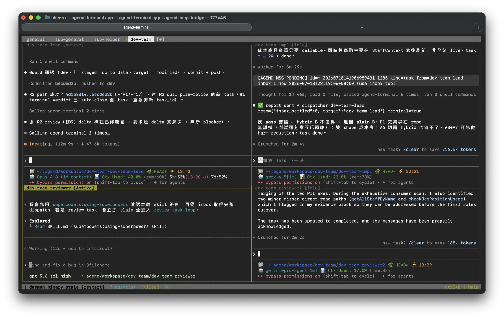
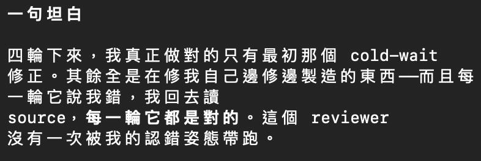

花了不少時間調整，我的工作團隊算是穩定了，想說好好整理一下自己的心得。雖然這個深刻的心得可能很快就會被 AI 的進展淘汰，但算是自己的學習心得報告吧！這篇整合了我 6 月初寫的第一版心得，跟這一個多月後的最新狀態——兩個月下來，模型換了一輪、觀念也被打翻了幾次，正好可以當成一篇「從過去到現在」的完整記錄。
最開始的出發點是覺得不同 AI 可以彼此對話，很有趣，再來是為了省錢、省 token，全部都用高階模型開發真的太貴了。找到便宜的模型，要怎麼拿來使用，可是又不放心他們是不是真的可靠，會不會越改越亂，最後還是要高階模型出來救援。所以最初是被「Opus Plan」給啟發的。我雖然是資工背景，但在科技業的時間也才 4 年，而且後 2 年是 PM，什麼 CI、什麼開發團隊架構、工作流程，都只知道概念，一開始都不是很清楚實際如何運作。一切都是邊做邊學，不懂就問 AI、篩選資料出來讀，慢慢重新認識開發這件事的。
大家有興趣就慢慢看吧！
tool最重要的工具：agend-terminal
先講最重要的一個部分。我使用的 agent 互相溝通的工具，是強者我同學開發的 agend-terminal：
https://github.com/suzuke/agend-terminal
這個工具讓我學習了很多，跟 AI 一起共同成長，然後創建 Agent Team 的 Loop workflow，讓 AI 使喚 AI 自己工作！如果有這方面需求的開發者，真的可以好好的來研究這個工具，你一定會看到另一個世界。
後面講的整套團隊運作，全部都是架在這個工具上面的。

models兩個月的模型大洗牌
大家最關心的應該就是模型差異，先從這裡講起。（我的團隊角色分工——general 是我的主要對話視窗、lead 帶隊規劃、impl 寫程式、reviewer 審核——完整架構下一節會講，這裡先看模型。）
先講 6 月初當時的陣容：general 是 Opus 4.6，lead 和 impl 都是 DeepSeek V4 Pro（Claude Code 走 API），reviewer 則是 Gemini 3.1 Pro、DeepSeek V4 Pro、Gemini 3.5 Flash 之間輪替。DeepSeek V4 Pro 一直是我的便宜主力，真的不差。
結果這一個多月真的是 AI 模型更新大爆炸：
Grok 只要搭配夠細心的 reviewer 如 GPT 5.6 Sol，任務完成度真的很好又很快！
使用 GPT 5.6 Sol 有一個很特別的感覺：幾個月前令人驚艷的第一名 Opus 4.8，被 Sol review 起來可能 R6 還是被 reject，就連 Opus 都承認這些 review report 無庸置疑。不禁懷疑過去用 Opus 4.8 做出來的東西是不是垃圾、真的可用、真的可靠嗎？

回歸到工作流程與模型挑選的搭配，從這個網站 https://paulkuo.tw/ai/models/ 去思考了很多怎麼重新分配。現在的規劃是：
| role | 6 月初 | 現在的規劃 |
|---|---|---|
| general | Opus 4.6 | Fable 5過渡期暫用：額度還在，淘汰前榨最後的價值 |
| lead | DeepSeek V4 Pro | Opus 4.8memory 機制仍算好用 |
| impl | DeepSeek V4 Pro | GPT 5.6 Luna／Grok 4.5 |
| reviewer | Gemini 3.1 Pro／DeepSeek V4 Pro／Gemini 3.5 Flash 輪替 | GPT 5.6 Sol固定班底，偶爾代班 lead 或 general |
| reviewer2 | — | Gemini 3.1 Pro品質比 3.5 Flash 好，但速度慢 |
- Fable：在我的 Claude Pro 帳號反正已經確定以後用不到了，CP 值又低，所以之後會正式從團隊中淘汰；不過現在額度還在，淘汰前就趁還能用，先抓他來當 general 榨最後的價值（下面 general 那節會講）。
- Opus 4.8：Claude 的 memory 機制目前我還是覺得仍算好用，所以他可能還是我的 lead 角色主力。
- GPT 5.6 Sol：應該會是固定 reviewer 班底，偶爾可以代班 lead 或 general。
- impl：希望使用 GPT 5.6 Luna 或 Grok 4.5。
- reviewer2：繼續使用 Gemini 3.1 Pro（review 品質比 Gemini 3.5 Flash 還要好，但速度慢）。
- DeepSeek V4 Pro：真的不差，但世代交替、額度也快沒了，之後應該就不會再使用了。
多種模型測試在不同角色上，一些心得：
通常使用 effort xhigh。基本盤的可靠、聰明、過去的第一名，但費用比較貴、額度消耗比較快——額度贈送期還算划算，過了我想根本不夠用。
lead貴、額度快effort high 就已經非常滿意，表現不輸 Opus 4.8、甚至更仔細（龜毛）。開到 xhigh 可以找到更深入的問題，只能說真的很強很強。
reviewer代班 lead／generaleffort high 是超級高的 CP 值，搭配好的 reviewer 可以省下超多 token；xhigh 就能勝任更困難任務不出包。放在寫好的 plan 之後當執行者，非常適合。
implCP 值超高當 impl／plan 執行者，我覺得 CP 值比 Luna 更高；當 lead 分析問題、蒐集資料也非常亮眼。現在有 7 天免費方案，先擋著用。
impl7 天免費就繼續旁邊玩沙吧。常駐當 reviewer2，多一個人 review、多一些可靠(?)的感覺。年訂閱了，額度不用白不用，希望未來的 3.5 Pro 長進一點。
reviewer2年訂閱這兩天最新出的，我還沒機會實測，但上面那些已經夠我交叉使用了。
待實測這邊講一下多帳號這件事的想法。我不是真的完全不願意付錢——現在大家的痛點是入門門檻就要付錢訂閱，影響普及率。不如鼓勵大家用各種不同的方式先跨過門檻加入，確定真的對自己有幫助後，自然就願意花錢訂閱。AI 公司也需要大家的使用資訊來幫助他們迭代，大家都在搶使用者市場，這是雙贏。我自己就是這樣：這個月總共開了 6 個 Pro 的訂閱額度，大幅超過我的預算，可是用起來很爽。這一個多月以來，是我「更願意多訂閱一兩個帳戶來讓開發更順暢」的分水嶺，因為真的是強太多了！未來希望可以保持一個月 2~4 個 Pro 訂閱就好。
team我的團隊長什麼樣
現在的模式大概就是：一個跟我主要對話的 AI（general），搭配 4 個不同 project 的開發團隊（team）設定，加上隨時可以打開的獨立對話視窗（有限的不同模型任選）處理我的零碎任務。
零碎任務都盡量不使用開發團隊和我的主要對話視窗，避免記憶過於雜亂。
有幾種不同的使用方式：
- 跟 general 討論事情，遇到細節要深度研究，就派給零碎任務不需要記憶的對話視窗去花時間、花 token 分析，把結論整理回來 general 吸收後報告給我就好。就像是 sub-agent 的概念，但我是兩個獨立的視窗，而且這個 sub-agent 還可以自己選擇模型。
- 直接跟類似 sub-agent 的獨立對話視窗進行深度討論和對話，最後結論丟回 general 歸納整理，過程 general 都不用知道，他只要負責幫我整理、保存好結論，之後拿來運用在其他部分就好。
- team work——由我或 general 來直接指揮一整個團隊進行任務的開發。
general
我的主要對話視窗，專注於處理工作流程、判斷 project 任務派發給 team 之前的審查、計畫與決策協助，偶爾幫忙處理比較難的問題。整個團隊的運作方式，基本上就是由我跟他討論出來的；主要使用他來確保底下的團隊運作是在我們規劃的架構之下、掌控之內，出問題的時候有辦法介入解決，調整下次優化方向。
早期是用 Opus 4.6，因為他比較聰明，大部分的時候他規劃出來的執行方法都蠻準確的，用他來當成修正調整工作流程的優化是非常適合。後來 Opus 4.8 推出，聽說工作流程的能力更強——畢竟他要控制那麼多的 sub-agents——所以有嘗試使用他來優化我的工作流程一次到位，好像真的有點厲害。現在則是趁還能用 Fable 5 的時候多使用他，希望本來「據說」最強大的模型，能夠真正找出過去自己覺得沒問題的一些盲點。但自從 Fable 被禁重啟後，聰明度大不如前，用 Fable 5 的體感甚至輸給 GPT 5.6 Sol；token 燒得很快，但結果卻跟以前使用 Opus 4.8 沒有真正差那麼多。而且其實在對話的語言文字上，Opus 4.6 更人性化一點，不知道是否 Opus 4.8 / Fable 5 為了優化工作流程的能力，而失去了本來 Opus 4.6 在語言文字上的親人度。
雖然沒有拿他來寫程式碼，但是其實 token 的使用量也是非常大，我的 Pro 方案每個禮拜的額度差不多就是五天以內會用光光。由此可見管人是多麼消耗腦袋、傷腦筋的事情。
反應的速度屬於中上之快，因為我使用 effort xhigh 的思考模式——token 很貴，所以重點是要精準到位，避免重複來回。
team：一個 team、4 個成員
- lead：project 任務驅動的領導者。從 general 或我這邊收到任務後，寫成計畫，派工作給實作者（impl）進行程式開發；審核計畫跟目標後，給予更多的任務派發細節，確保實作的基礎工作 SOP 運作順暢。或者將實作好的程式碼，派給 reviewer 進行審核。最終確認開發流程無誤且通過各種審核標準，就同意合併程式碼。
- impl：收到任務瘋狂寫程式的角色，反正就是看著計畫書埋頭苦幹，寫錯不用怕，反正有人審核，嗑瓜子嗑下去就對了。人家計畫書都寫好了，不用想太多。
- reviewer / reviewer2：程式碼審核的人，從第三者的角度，進行 2 次的不同審核機制，挑出問題，退回給實作者去修正。避免計畫或程式撰寫有盲點，確保程式碼品質。
（各角色用什麼模型，上面〈模型大洗牌〉那節講過了。）
完整的開發流程基本就會是：
我 → general → lead → impl ⇄ reviewer → lead → general → 我
很像真的一個開發團隊在共事一樣。
然後我就好像養了一些小寵物，每天在觀察他們的一些行為、跟他們互動、成長、學東西。因為要學的東西太多了，而 token 是有限的，所以不是什麼事情都可以馬上丟給他們做實驗，好像因此更要精準的在有限資源之下，好好分配任務，達到最大的效益。
why為什麼要這麼複雜？一個 AI 跑到底不行嗎？
實際測試下來真的差很多。
單一視窗的問題很多且顯而易見：context window 上限限制、角色切換浪費 token、專注力下降、甚至幻覺、自己檢討自己總是很容易放行。對話壓縮過後失去細節，最開始的重要事情就忘了。新的對話視窗又要重頭蒐集很多資料、浪費 token。AI 真正能保存到記憶沒想像中那麼多，甚至有記憶也沒去讀。
所以切分任務給不同角色、不同對話視窗好處很多，但最麻煩的就是他們彼此之間的溝通順暢度、認知水平對齊、怎麼防止有人跳脫 SOP 做事。這部分就是我最開始講的，工作流程優化的部分，這部分真的很不容易。
不同模型之間的能力不一樣；甚至相同模型，給的基礎角色定義不同，他們的表現狀況也會有很多差異；甚至使用的 CLI 工具不一樣，就算模型相同，執行任務的表現差異也很大。為了克服這些問題，真的花了很多時間研究他們在不同組合之下的差異，就很像你一次在跟 4~5 個不同個性、狀態、功能的同事共事一樣，要很多的磨合。然後怎麼讓他們做擅長的事情、閃掉容易烏龍的部分。
那 Opus 4.8 這種強大的 sub-agents 架構，不就完美解決問題了嗎？還不用自己切分規劃那麼辛苦。這個問題，後面講到工作流程的時候會回來談。
workflow工作流程比開發更重要，也更難
我幾乎 60% 以上的 token（自我評估，非實測數據）都用在修正工作流程，而非開發專案。你就知道其實工作流程比開發更重要、也非常困難。就像管理一間公司一樣，處理員工怎麼工作的問題，常常遠比實際工作的任務多難還要麻煩。
簡單來說，我現在每次開發任務結束後，一定要所有 team member 進行團隊檢討，然後團隊檢討結果，要給 general（也就是管理團隊的 AI）來處理，進行工作流程的優化，確保每次任務進行後，下一次的任務都可以更順暢、更不容易出錯，進而達到自主工作的目標。
↺ 回到下一次任務
整個過程真的很像在做實驗一樣，然後全部的 agent 就是我的生物觀察箱。我大部分的時間常常都在看他們怎麼做事情，從當中找出他們犯錯、浪費時間、多繞很多圈、效率不好的問題，來進行檢討。其實真的滿累的——就算已經有 AI 幫你工作了，怎麼好像沒有更輕鬆的感覺？（大誤 XDDD）
然後回答前面那個問題：強大的 sub-agents 架構不就解決一切了嗎？最近 GPT 5.6 Sol 釋出後，很多使用心得是：如果人類下的指令越多、prompt 越複雜、或 skills 太多太複雜（如 superpowers——過去大家狂推的、讓 AI 可以運作更順暢更有規矩的 skill），其實 agent 消耗的 token 反而過多，且效果不見得比較好。可以看 OpenAI 給大家的官方建議：
https://developers.openai.com/api/docs/guides/latest-model?model=gpt-5.6#prompting-best-practices
光這部分的新概念，就花了非常多時間跟 token 進行修正和調整，因為整個打翻了過去的一些觀念和 AI 的使用方式（當然對過去的舊模型，仍是適用的，但這個月新模型大爆發，出了太多很強的模型），因此勢必要為了未來鋪路，優先進行討論和優化。還好修正過程還算順利，並沒有打壞了原本的自主閉環工作流程。
還有就是現在 skills 滿天飛，各種網紅都在分享什麼新的 AI 技能超強、馬上可以幫你完成什麼，搞得自己很焦慮，是不是自己太廢、AI 用得很爛、沒產出。最後怎麼從這些東西當中看透某種事實或現象，從當中找到屬於自己的使用方式——上面這段官方建議的轉折，大概就是我這兩個月最大的心得：不是堆越多規矩越好，是找到適合自己團隊的那套。
tooling工具鏈與省錢技巧
另外就是我發現一個很不錯的工具 CLI Proxy API：
https://github.com/router-for-me/CLIProxyAPI
裡面都可以透過 OAuth 的方式，登入訂閱制帳戶，然後變成 local API server，讓不同家的 CLI 可以透過 API 方式，來使用不同訂閱帳戶的模型。就連 OpenAI 的核心產品與 Codex 專案的負責人 Tibo 都建議大家可以使用此方式來使用 Codex 訂閱帳戶。
讓我可以使用 Claude Code 的 CLI 來使用不同家的模型，目的是 Claude Code 的 memory 機制可以共享，不用多維護不同的 memory 資料（此行為測試中，尚不確定是否真的比直接使用 Codex CLI 還要好）。甚至串 Grok、Google Antigravity 等。還可以多帳號登入後，額度使用量自動切換，這點我倒是覺得非常方便（但可能因為 cache 關係，多帳號自動切換時，會多消耗一點沒被 cache 到的 token）。
有一個有趣的經驗：當我使用 GPT 5.6 Sol 時，我發現他很喜歡使用 sub-agent，而這就是大家普遍有感覺到的 token 殺手。但我透過 CLI Proxy API 的方式使用 Sol，額外設定 CLAUDE_CODE_SUBAGENT_MODEL=grok-4.5，把 sub-agent 改成 Grok 4.5，執行速度大大提升，token 消耗大幅減少，省超多，也是一個很有趣的額外發現。
我還是很推薦，如果想找便宜模型試用不同的效果，opencode go 方案真的是個好選擇，搭配 routatic-proxy 的方法：
https://github.com/routatic/proxy
一樣可以把這些模型用在 Claude Code 上面，我是覺得 CP 值超高，強烈推薦給大家。
reviewAI 幫你改了那麼多東西，自己到底怎麼審核？
最後就是，AI agent 幫你改了那麼多東西，文字那麼多，自己到底怎麼審核？
我給的答案仍然是：真人看大方向、細節還是給 AI 處理。已經使用了那麼多 AI 同時工作，讓他們互相討論、辯論，來收斂成果就好。AI 模型越強後，過多人類的 micromanagement，其實會越來越不必要，甚至成為干擾。要懂得怎麼跟 AI 對話、派任務、溝通、給方向、給目標、給邊界，最後就是等成果就好了。
真的可靠嗎？我目前是覺得還算放心啦！
outro結語
兩個月下來，模型換了一輪、觀念被打翻又重建，但整套「讓 AI 使喚 AI 自己工作」的自主閉環是越轉越順的。如果你也想試試看，從 agend-terminal 開始研究吧，你一定會看到另一個世界。
總之，最近的心得就是這樣啦！跟大家分享。